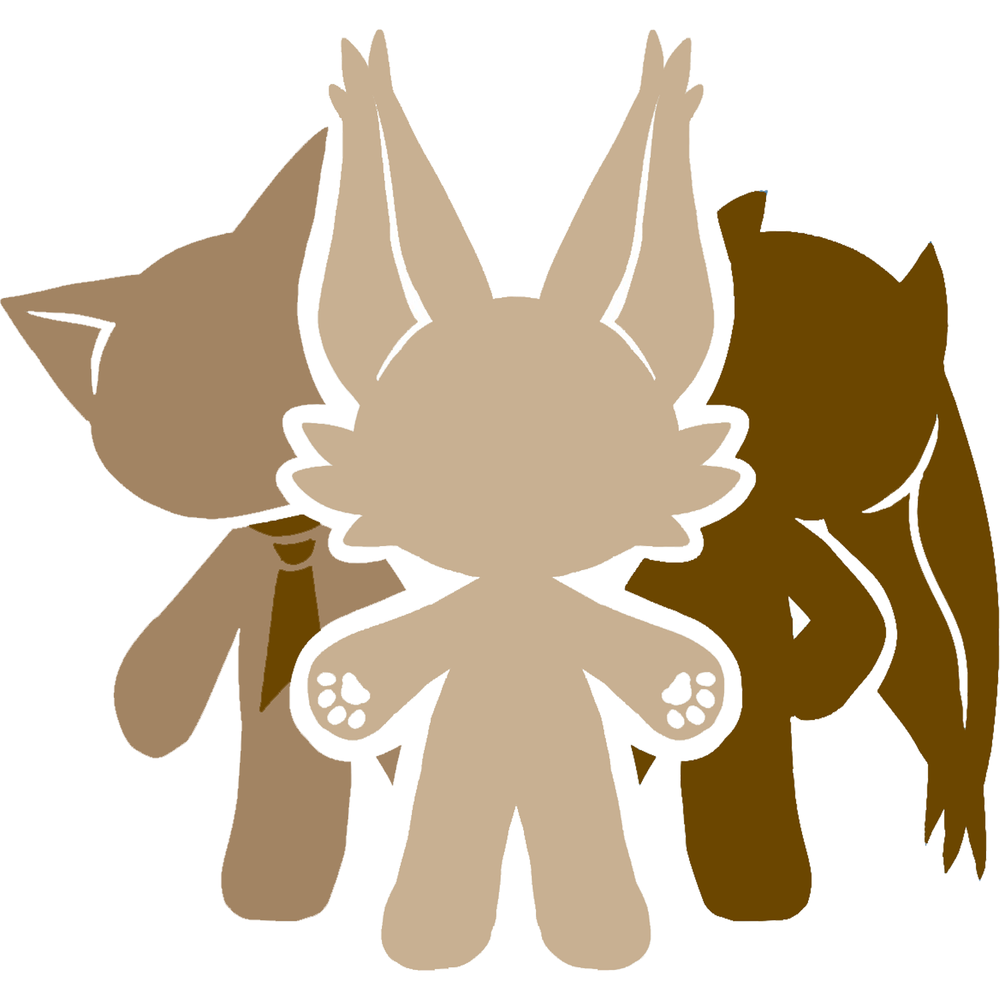

Welcome to The Encyclopedia
Of Cat Personality and Habits
- Classification of Cat Personality
- The Living Habits of Cats
- How to choose a cat that suits oneself
- Cat breed personality comparison form
- Cat Health and Training
Whether you are looking for a cat that suits you or want to better understand your furry friends at home, this is your best choice. We provide you with comprehensive analysis of cat personality, popular science on cat habits, and tips for raising cats, allowing you to establish a deeper connection with your cats. If you are considering getting a cat, our recommendation feature can also help you find the most suitable cat companion based on your lifestyle and preferences! Come and explore the wonderful world of cats together!
Online Store

Different Cat Breeds